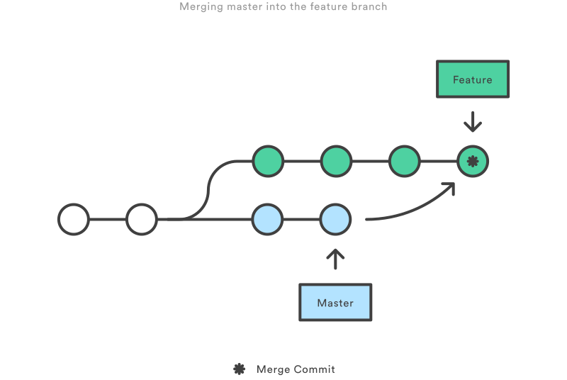

Resources
Need a refresher?

Merging and Branching in Git
Git BranchThis was interesting! Gained some new git techniques where I'm not totally solid on just yet but it makes some sense now. Interested in learning Git? Well you've come to the right place! "Learn Git Branching" is the most visual and interactive way to learn Git on the web; you'll be challenged with exciting levels, given step-by-step demonstrations of powerful features, and maybe even have a bit of fun along the way.